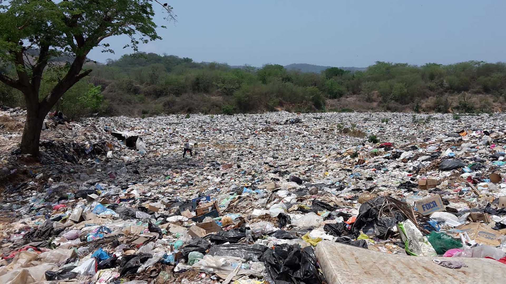
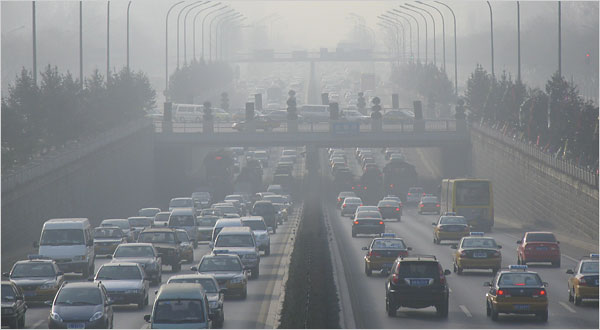

Existen diferentes tipos de contaminación aquí te mencionaremos algunos de ellos:
Contaminación Lumínica
La contaminación lumínica puede definirse como la emisión de flujo luminoso de fuentes artificiales de luz nocturnas en intensidades, direcciones, rangos espectrales u horarios innecesarios para la realización de las actividades previstas en la zona en la que se instalan las luces.
Contaminación Acustica
Se llama contaminación acústica o contaminación sonora al exceso de sonido que altera las condiciones normales del ambiente en una determinada zona. Si bien el ruido no se acumula, traslada o mantiene en el tiempo como las otras contaminaciones, también puede causar grandes daños en la calidad de vida de las personas si no se controla bien o adecuadamente.
Más información
Contaminación del Suelo
La contaminación del suelo consiste en la acumulación de sustancias a unos niveles tales que repercuten negativamente en el comportamiento de los suelos. Las sustancias, a esos niveles de concentración, se vuelven tóxicas para los organismos que viven en él. Se trata de una degradación química que provoca la pérdida parcial o total de su productividad.


Contaminación del Aire
Se entiende por contaminación atmosférica a la presencia en el aire de materias o formas de energía que implican riesgo, daño o molestia grave para las personas y bienes de cualquier naturaleza, así como que puedan atacar a distintos materiales, reducir la visibilidad o producir olores desagradables.

Contaminación del Agua
La contaminación hídrica se entiende como la acción de introducir algún material en el agua alterando su calidad y su composición química. Según la Organización Mundial de la Salud el agua está contaminada “cuando su composición se haya modificado de modo que no reúna las condiciones necesarias para el uso, al que se le hubiera destinado en su estado natural”. El agua que procede de ríos, lagos y quebradas es objeto de una severa contaminación, muchas veces producto de las actividades del hombre.